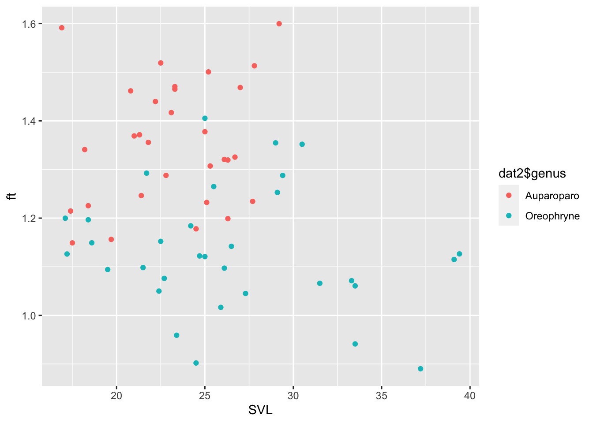
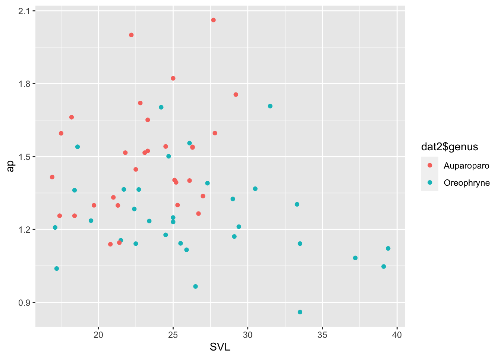
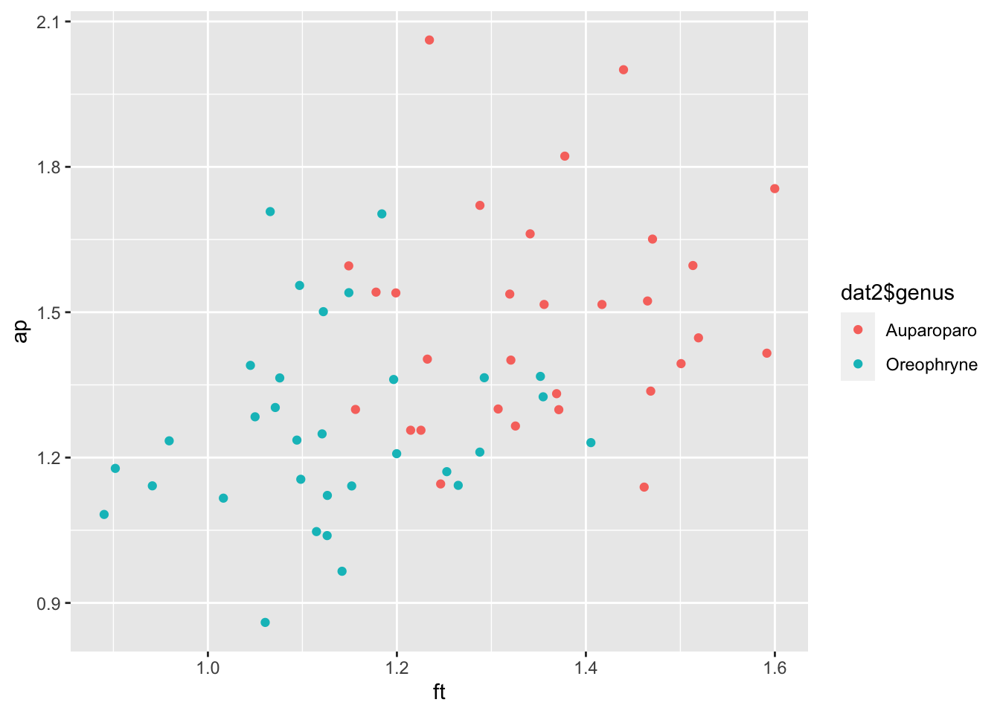
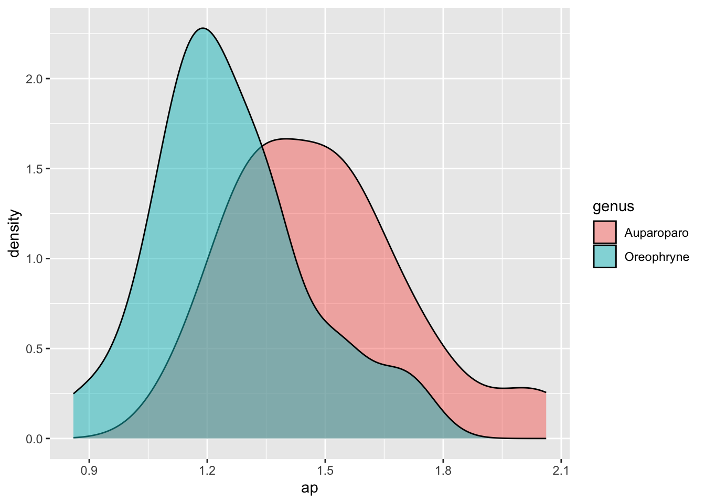

knitr::read_chunk('processingcode.R')Assessing validity of two new taxonomic traits
Data Processing
After discovering the Papuan genus of microhylid frog, (Oreophryne), is polyphyletic through molecular phylogenetic analysis, I seek to identify morphological characteristics to distinguish the two monophyletic clades. The genus containing type species “(Oreophryne senckenbergiana)” will retain the name (Oreophryne). The new genus will be called (Auparoparo) in this study.
Proposed traits
Through visual observation, I have suspected two distinctions between these highly convergent groups. I have measured images of museum specimens (6 species per genus, ~5 individuals per species) using the software ImageJ to assess if these traits are quantitatively different.
One is the ratio of finger pad width to toe pad width. This character will be represented by the variable ft. (Oreophryne)s tend to have more equally sized finger and toe pads so I expect their ft ratio to be closer to 1. (Auparoparo)s have larger finger pads than toe pads so I expect their ft ratio to be larger than 1.
The other trait I suspect is the shape of the upper palatal grooves. This character will be represented by the variable ap which is the ratio of the width of the grooves clostest to the nares (anterior) vs closest to the pharynx (posterior). (Oreophryne)s tend to have more parallel grooves so I expect their ap ratio to be closer to 1. (Auparoparo)s have grooves which taper towards the pharynx so I expect their ap ratio to be larger than 1.
Set up for R
A variety of packages are needed.
#load needed packages. make sure they are installed.
require(ggplot2) #exploring plots
require(dplyr) #for data processing/cleaning
require(skimr) #for nice visualization of data
# function to paste path to output filenames
addpath <- function( filename, path=data_path ) {
location <- paste( path, filename, sep="")
return( location )
}data_location <- "../../Data/Raw_data/Oreophryne_Character_Measurements.csv"
data_path <- "../../Data/Raw_data/"
results_path <- "../../Results/"
rawdata <- read.csv(data_location, check.names=FALSE)
head(rawdata) genus species BPBM svl (mm) meas number label mean
1 Oreophryne inornata 16220 33.5 10mm 10 IMG_5115.jpg 349
2 NA NA 3rd finger 11 IMG_5115.jpg 96
3 NA NA 4th toe 12 IMG_5115.jpg 90
4 NA NA 10mm 4 IMG_4850.jpg 417
5 NA NA anterior width 5 IMG_4850.jpg 81
6 NA NA posterior width 6 IMG_4850.jpg 94
min max angle length pixels finger width (mm) toe width (mm)
1 175.447 34.057 242.144 -0.988 348.052 2.725685 2.569817
2 203.509 68.000 249.333 -18.435 94.868 NA NA
3 159.380 141.000 172.865 26.565 89.443 NA NA
4 221.933 78.167 237.056 -3.035 415.583 NA NA
5 155.321 143.667 165.000 0.000 80.000 NA NA
6 178.323 161.871 239.548 1.848 93.048 NA NA
f/t ant width (mm) pos width (mm) a/p
1 1.060653 1.925007 2.238975 0.8597713
2 NA NA NA NA
3 NA NA NA NA
4 NA NA NA NA
5 NA NA NA NA
6 NA NA NA NA# view data dictionary
dictionary <- read.csv(paste(data_path, "datadictionary.csv", sep=""))
print(dictionary) variable
1 genus
2 species
3 BPBM
4 svl (mm)
5 meas
6 number
7 label
8 mean
9 min
10 max
11 angle
12 length
13 pixels
14 finger width (mm)
15 toe width (mm)
16 f/t
17 ant width (mm)
18 pos width (mm)
19 a/p
X..description.
1 "a character string denoting the frog species"
2 "a character string denoting the frog species"
3 "an integer denoting the Bishop Museum catalogue number"
4 "a number denoting the snout vent length (millimeters)"
5 "a character string denoting either the standard or which measurement was taken"
6 “an arbitrary number from ImageJ measurement table import"
7 "a character string denoting the unique photograph ID from which each measurement was taken “
8 "a number leftover from ImageJ measurement table import (disregard)”
9 "a number leftover from ImageJ measurement table import (disregard)”
10 "a number leftover from ImageJ measurement table import (disregard)”
11 "a number leftover from ImageJ measurement table import (disregard)”
12 "a number leftover from ImageJ measurement table import (disregard)”
13 "a number denoting the measurement length (pixels)”
14 "a number denoting the converted measurement length (millimeters) of the widest part of the 3rd finger”
15 "a number denoting the converted measurement length (millimeters) of the widest part of the 4th toe”
16 "a unitless number denoting the ratio of finger width:toe width”
17 "a number denoting the converted measurement length (millimeters) of the width between palatal grooves closest to the nares”
18 "a number denoting the converted measurement length (millimeters) of the width between palatal grooves closest to the pharynx”
19 "a unitless number denoting the ratio of anterior palatal groove width:posterior palatal groove width”Data Cleanup
Due to import from ImageJ and coversions, I begin with a non-rectangular dataframe. Let’s clean it up.
head(rawdata) #notice because of the format of ImageJ output and the way I converted pixels to mm, there are 5 rows with NA for each specimen genus species BPBM svl (mm) meas number label mean
1 Oreophryne inornata 16220 33.5 10mm 10 IMG_5115.jpg 349
2 NA NA 3rd finger 11 IMG_5115.jpg 96
3 NA NA 4th toe 12 IMG_5115.jpg 90
4 NA NA 10mm 4 IMG_4850.jpg 417
5 NA NA anterior width 5 IMG_4850.jpg 81
6 NA NA posterior width 6 IMG_4850.jpg 94
min max angle length pixels finger width (mm) toe width (mm)
1 175.447 34.057 242.144 -0.988 348.052 2.725685 2.569817
2 203.509 68.000 249.333 -18.435 94.868 NA NA
3 159.380 141.000 172.865 26.565 89.443 NA NA
4 221.933 78.167 237.056 -3.035 415.583 NA NA
5 155.321 143.667 165.000 0.000 80.000 NA NA
6 178.323 161.871 239.548 1.848 93.048 NA NA
f/t ant width (mm) pos width (mm) a/p
1 1.060653 1.925007 2.238975 0.8597713
2 NA NA NA NA
3 NA NA NA NA
4 NA NA NA NA
5 NA NA NA NA
6 NA NA NA NA#Making a new rectangular dataframe for only converted measurements (mm not pixels) for each specimen
# exclude rows with NAs
nas <- which( is.na(rawdata$BPBM) ) # find which rows have NA
dat <- rawdata[-nas,] # exclude these rows
head(dat) genus species BPBM svl (mm) meas number label mean min
1 Oreophryne inornata 16220 33.5 10mm 10 IMG_5115.jpg 349 175.447
7 Oreophryne inornata 16233 39.4 10mm 13 IMG_5116.jpg 346 166.945
13 Oreophryne inornata 16228 39.1 10mm 1 IMG_5117.jpg 397 172.858
19 Oreophryne inornata 16230 33.3 10mm 4 IMG_5118.jpg 403 172.760
25 Oreophryne inornata 16248 37.2 10mm 7 IMG_5119.jpg 361 169.894
31 Oreophryne inornata 16221 33.5 10mm 10 IMG_5120.jpg 385 152.666
max angle length pixels finger width (mm) toe width (mm) f/t
1 34.057 242.144 -0.988 348.052 2.725685 2.569817 1.0606532
7 4.304 235.246 -2.490 345.326 3.544853 3.146997 1.1264240
13 32.141 237.455 -2.314 396.323 3.525357 3.162067 1.1148899
19 20.915 241.025 -0.428 402.011 2.860195 2.669852 1.0712935
25 7.852 232.733 -1.273 360.089 2.846213 3.197404 0.8901637
31 4.333 213.667 0.000 384.000 2.031250 2.158151 0.9411992
ant width (mm) pos width (mm) a/p
1 1.925007 2.238975 0.8597713
7 2.040953 1.819231 1.1218767
13 2.543428 2.428636 1.0472664
19 2.301331 1.765703 1.3033506
25 2.360875 2.180701 1.0826219
31 2.111844 1.849800 1.1416607#removing unnecessary columns, artifacts from importing pixel measurements from ImageJ
dat2 <- dat[-c(5:13)]
#cleaning up column names
colnames(dat2) <- c("genus","species", "BPBM", "SVL", "finger", "toe", "ft", "anterior", "posterior", "ap")
head(dat2) genus species BPBM SVL finger toe ft anterior
1 Oreophryne inornata 16220 33.5 2.725685 2.569817 1.0606532 1.925007
7 Oreophryne inornata 16233 39.4 3.544853 3.146997 1.1264240 2.040953
13 Oreophryne inornata 16228 39.1 3.525357 3.162067 1.1148899 2.543428
19 Oreophryne inornata 16230 33.3 2.860195 2.669852 1.0712935 2.301331
25 Oreophryne inornata 16248 37.2 2.846213 3.197404 0.8901637 2.360875
31 Oreophryne inornata 16221 33.5 2.031250 2.158151 0.9411992 2.111844
posterior ap
1 2.238975 0.8597713
7 1.819231 1.1218767
13 2.428636 1.0472664
19 1.765703 1.3033506
25 2.180701 1.0826219
31 1.849800 1.1416607Checking
Let’s check that there’s no weird patterns or outliers in our dataset
# look at the data
skimr::skim(dat2)| Name | dat2 |
| Number of rows | 62 |
| Number of columns | 10 |
| _______________________ | |
| Column type frequency: | |
| character | 2 |
| numeric | 8 |
| ________________________ | |
| Group variables | None |
Variable type: character
| skim_variable | n_missing | complete_rate | min | max | empty | n_unique | whitespace |
|---|---|---|---|---|---|---|---|
| genus | 0 | 1 | 10 | 10 | 0 | 2 | 0 |
| species | 0 | 1 | 4 | 10 | 0 | 12 | 0 |
Variable type: numeric
| skim_variable | n_missing | complete_rate | mean | sd | p0 | p25 | p50 | p75 | p100 | hist |
|---|---|---|---|---|---|---|---|---|---|---|
| BPBM | 0 | 1 | 26667.44 | 9536.80 | 16119.00 | 17983.25 | 23133.00 | 33777.50 | 47656.00 | ▇▂▅▂▂ |
| SVL | 0 | 1 | 24.82 | 5.16 | 16.90 | 21.55 | 24.60 | 26.92 | 39.40 | ▅▇▅▂▁ |
| finger | 0 | 1 | 1.81 | 0.55 | 0.84 | 1.41 | 1.76 | 2.05 | 3.54 | ▅▇▇▂▁ |
| toe | 0 | 1 | 1.50 | 0.56 | 0.53 | 1.10 | 1.42 | 1.70 | 3.20 | ▃▇▃▁▁ |
| ft | 0 | 1 | 1.24 | 0.17 | 0.89 | 1.12 | 1.23 | 1.36 | 1.60 | ▂▇▇▆▃ |
| anterior | 0 | 1 | 2.00 | 0.35 | 1.37 | 1.74 | 1.93 | 2.25 | 2.75 | ▃▇▅▃▂ |
| posterior | 0 | 1 | 1.49 | 0.33 | 0.93 | 1.24 | 1.41 | 1.71 | 2.43 | ▅▇▆▂▁ |
| ap | 0 | 1 | 1.37 | 0.24 | 0.86 | 1.21 | 1.33 | 1.53 | 2.06 | ▂▇▆▂▁ |
Exploratory plots
Let’s see how the data looks to begin understanding where we might see patterns
# create scatter plots of SVL vs finger:toe ratio and SVL vs anterior width:posterior width of palatal groove, colored by genus
svl.vs.ft <- ggplot(data = dat2) + geom_point(aes(x = SVL, y = ft, col=dat2$genus))
svl.vs.ft
png(filename = addpath("svl_ft.png", results_path))
svl.vs.ft
dev.off()quartz_off_screen
2 svl.vs.ap <- ggplot(data = dat2) + geom_point(aes(x = SVL, y = ap, col=dat2$genus))
svl.vs.ap
png(filename = addpath("svl_ap.png", results_path))
svl.vs.ap
dev.off()quartz_off_screen
2 # just for fun... ft vs ap by genus
ft.vs.ap <- ggplot(data = dat2) + geom_point(aes(x = ft, y = ap, col=dat2$genus))
ft.vs.ap
png(filename = addpath("ft_ap.png", results_path))
ft.vs.ap
dev.off()quartz_off_screen
2 #density plots
ft.dens <- dat2 %>% # CC by species
ggplot( aes(x=`ft`)) +
geom_density( aes(fill=genus), alpha=.5)
ft.dens
png(filename = addpath("ft_dens.png", results_path))
ft.dens
dev.off()quartz_off_screen
2 ap.dens <- dat2 %>% # CC by species
ggplot( aes(x=`ap`)) +
geom_density( aes(fill=genus), alpha=.5)
ap.dens
png(filename = addpath("ap_dens.png", results_path))
ap.dens
dev.off()quartz_off_screen
2 # we can see some trends but no clear distinctions yetI notice some trends that I would like to test for significance.
Save data
Now we can save our cleaned up data for analysis
processeddata <- dat2 # change if you did more steps
# location to save file
save_data_location <- "../../Data/Processed_data/processeddata.rds"
saveRDS(processeddata, file = save_data_location)
save_data_location_csv <- "../../Data/Processed_data/processeddata.csv"
write.csv(processeddata, file = save_data_location_csv, row.names=FALSE)
print(dat2 ) genus species BPBM SVL finger toe ft anterior
1 Oreophryne inornata 16220 33.5 2.7256847 2.5698172 1.0606532 1.925007
7 Oreophryne inornata 16233 39.4 3.5448533 3.1469973 1.1264240 2.040953
13 Oreophryne inornata 16228 39.1 3.5253568 3.1620673 1.1148899 2.543428
19 Oreophryne inornata 16230 33.3 2.8601954 2.6698523 1.0712935 2.301331
25 Oreophryne inornata 16248 37.2 2.8462130 3.1974040 0.8901637 2.360875
31 Oreophryne inornata 16221 33.5 2.0312500 2.1581510 0.9411992 2.111844
37 Oreophryne inornata 16237 31.5 2.2742756 2.1335743 1.0659463 2.107239
43 Oreophryne loriae 22538 22.7 1.5467103 1.4373999 1.0760473 1.687047
49 Oreophryne loriae 47656 26.1 1.9396305 1.7680364 1.0970534 1.887275
55 Oreophryne loriae 22359 24.7 1.8597267 1.6572670 1.1221648 2.634305
61 Oreophryne loriae 27488 25.9 1.5839820 1.5584403 1.0163893 1.820982
67 Oreophryne loriae 22537 25.0 1.7768630 1.5852774 1.1208530 2.590565
73 Oreophryne notata 33697 17.1 0.9758758 0.8133893 1.1997647 1.373010
79 Oreophryne notata 33772 18.4 1.3608961 1.1373097 1.1965923 1.921629
85 Oreophryne notata 33706 18.6 1.2753466 1.1097980 1.1491701 1.671264
91 Oreophryne notata 33674 19.5 1.1964000 1.0934345 1.0941671 1.613057
97 Oreophryne notata 33673 17.2 1.3473555 1.1964000 1.1261748 1.775757
103 Oreophryne parkeri 31472 23.4 1.7246863 1.7983391 0.9590440 2.001250
109 Oreophryne parkeri 34647 21.5 1.6182523 1.4734258 1.0982924 1.889284
115 Oreophryne parkeri 34648 24.2 2.2056398 1.8627309 1.1840893 2.574976
121 Oreophryne parkeri 34649 22.5 2.1105284 1.8317870 1.1521691 2.074878
127 Oreophryne parkeri 22785 24.5 2.0934011 2.3208078 0.9020140 2.177706
133 Oreophryne biroi 23484 21.7 1.9491547 1.5080785 1.2924756 2.300621
139 Oreophryne biroi 23483 27.3 1.9774227 1.8922797 1.0449949 2.263765
145 Oreophryne biroi 23481 30.5 2.2434829 1.6595299 1.3518786 2.724127
151 Oreophryne biroi 34690 22.4 1.4836308 1.4130939 1.0499166 2.412854
157 Oreophryne biroi 23485 29.0 2.0708404 1.5285488 1.3547754 2.195264
163 Oreophryne anamiatoi 33778 25.0 1.7473131 1.2433636 1.4053114 1.686938
169 Oreophryne anamiatoi 33775 25.5 1.9573333 1.5474123 1.2649074 2.048867
175 Oreophryne anamiatoi 33776 29.1 1.9874072 1.5863706 1.2528013 1.731468
181 Oreophryne anamiatoi 33764 26.5 1.9965776 1.7483991 1.1419461 1.710901
187 Oreophryne anamiatoi 33769 29.4 2.4583997 1.9090071 1.2877897 2.431162
193 Auparoparo penelopeia 42016 22.8 1.4159583 1.0994494 1.2878794 1.598678
199 Auparoparo penelopeia 42015 22.2 1.5386948 1.0686595 1.4398363 1.870853
205 Auparoparo penelopeia 42014 21.0 1.3949451 1.0189437 1.3690109 1.667707
211 Auparoparo penelopeia 42017 20.8 1.4019973 0.9591650 1.4616852 1.399954
217 Auparoparo penelopeia 42018 22.5 1.7149524 1.1288810 1.5191614 1.738444
223 Auparoparo insulana 16547 21.8 1.2568782 0.9270404 1.3557965 1.885403
229 Auparoparo insulana 16546 21.4 1.1449935 0.9187116 1.2463034 1.450790
235 Auparoparo insulana 16549 16.9 0.8413504 0.5286453 1.5915216 1.539136
241 Auparoparo insulana 16119 23.3 1.4290323 0.9752823 1.4652499 1.892753
247 Auparoparo insulana 16548 21.3 1.2236124 0.8922670 1.3713522 1.836879
253 Auparoparo phoebe 39522 25.3 1.9870045 1.5200965 1.3071568 1.754202
259 Auparoparo phoebe 39521 27.7 2.0611544 1.6697319 1.2344223 2.742335
265 Auparoparo phoebe 39523 25.0 1.9286043 1.3998863 1.3776864 2.220108
271 Auparoparo phoebe 39517 24.5 1.6827182 1.4285226 1.1779430 1.969439
277 Auparoparo phoebe 39526 26.7 1.6907195 1.2755703 1.3254617 1.795419
283 Auparoparo picticrus 18146 27.8 2.5783395 1.7038225 1.5132677 2.339977
289 Auparoparo picticrus 18145 29.2 2.2051257 1.3783156 1.5998700 2.754825
295 Auparoparo picticrus 18130 27.0 2.2325322 1.5201684 1.4686085 2.072932
301 Auparoparo picticrus 18125 26.3 1.4481446 1.2078909 1.1989035 1.998968
307 Auparoparo picticrus 18163 26.3 1.6126210 1.2221914 1.3194504 2.023974
313 Auparoparo matawan 17978 18.2 1.3587333 1.0132082 1.3410208 1.801642
319 Auparoparo matawan 17980 19.7 1.2122317 1.0484720 1.1561889 1.656974
325 Auparoparo matawan 17984 17.5 1.1136067 0.9691554 1.1490486 1.783905
331 Auparoparo matawan 17979 18.4 1.2630484 1.0306680 1.2254658 1.469490
337 Auparoparo matawan 17983 17.4 1.1083056 0.9125283 1.2145438 1.469490
343 Auparoparo ezra 20473 23.3 2.0230250 1.3757225 1.4705182 1.883498
349 Auparoparo ezra 20472 23.1 1.6557306 1.1684581 1.4170217 1.967436
355 Auparoparo ezra 20467 25.1 1.8494577 1.5008803 1.2322486 2.376427
361 Auparoparo ezra 20486 26.1 1.7662831 1.3374800 1.3206052 2.336082
367 Auparoparo ezra 20469 25.2 1.7935809 1.1951417 1.5007266 1.943127
posterior ap
1 2.2389751 0.8597713
7 1.8192307 1.1218767
13 2.4286356 1.0472664
19 1.7657035 1.3033506
25 2.1807012 1.0826219
31 1.8498004 1.1416607
37 1.2339677 1.7076942
43 1.2365076 1.3643647
49 1.2134821 1.5552560
55 1.7548614 1.5011471
61 1.6313069 1.1162716
67 2.0742938 1.2488901
73 1.1365834 1.2080153
79 1.4117430 1.3611751
85 1.0850038 1.5403298
91 1.3049745 1.2360834
97 1.7091297 1.0389833
103 1.6210142 1.2345666
109 1.6354433 1.1552120
115 1.5120729 1.7029443
121 1.8177745 1.1414385
127 1.8491299 1.1776922
133 1.6856670 1.3648133
139 1.6282631 1.3902942
145 1.9919622 1.3675598
151 1.8789498 1.2841503
157 1.6562628 1.3254324
163 1.3705516 1.2308459
169 1.7930430 1.1426761
175 1.4787045 1.1709361
181 1.7722977 0.9653575
187 2.0070918 1.2112861
193 0.9292117 1.7204667
199 0.9352027 2.0004783
205 1.2521472 1.3318781
211 1.2290729 1.1390324
217 1.2013250 1.4471052
223 1.2436504 1.5160231
229 1.2664244 1.1455795
235 1.0873819 1.4154514
241 1.2426473 1.5231620
247 1.4142140 1.2988693
253 1.3491151 1.3002609
259 1.3300471 2.0618333
265 1.2184155 1.8221271
271 1.2776472 1.5414577
277 1.4191487 1.2651382
283 1.4658083 1.5963730
289 1.5696252 1.7550845
295 1.5502525 1.3371579
301 1.2981732 1.5398319
307 1.3164484 1.5374504
313 1.0841740 1.6617649
319 1.2752442 1.2993383
325 1.1179524 1.5956896
331 1.1695942 1.2564103
337 1.1695942 1.2564103
343 1.1408763 1.6509224
349 1.2978133 1.5159621
355 1.6935972 1.4031833
361 1.6672497 1.4011591
367 1.3940535 1.3938682